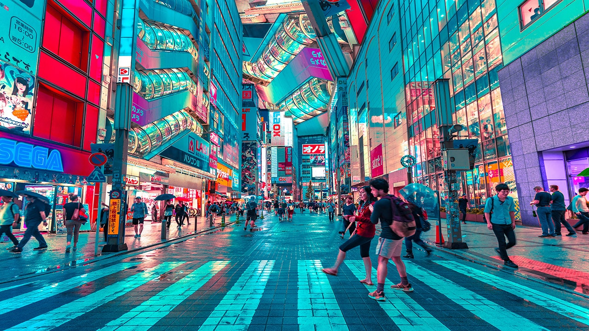

Tokyo, la capitale des sushis !
Tokyo est réputée pour ses gratte-ciels illuminés, ses néons éblouissants et ses quartiers futuristes comme Shibuya, avec son célèbre carrefour bondé, et Shinjuku, un centre d’affaires et de divertissement vibrant. Le quartier d’Akihabara est le paradis des passionnés de jeux vidéo, de manga et de nouvelles technologies.
Malgré son urbanisme impressionnant, Tokyo conserve un riche héritage culturel. Des temples et sanctuaires comme le Sensō-ji à Asakusa ou le Meiji-jingū à Harajuku offrent des havres de paix en plein cœur de la ville. Les jardins japonais et les maisons de thé perpétuent aussi l’esprit zen ancestral.